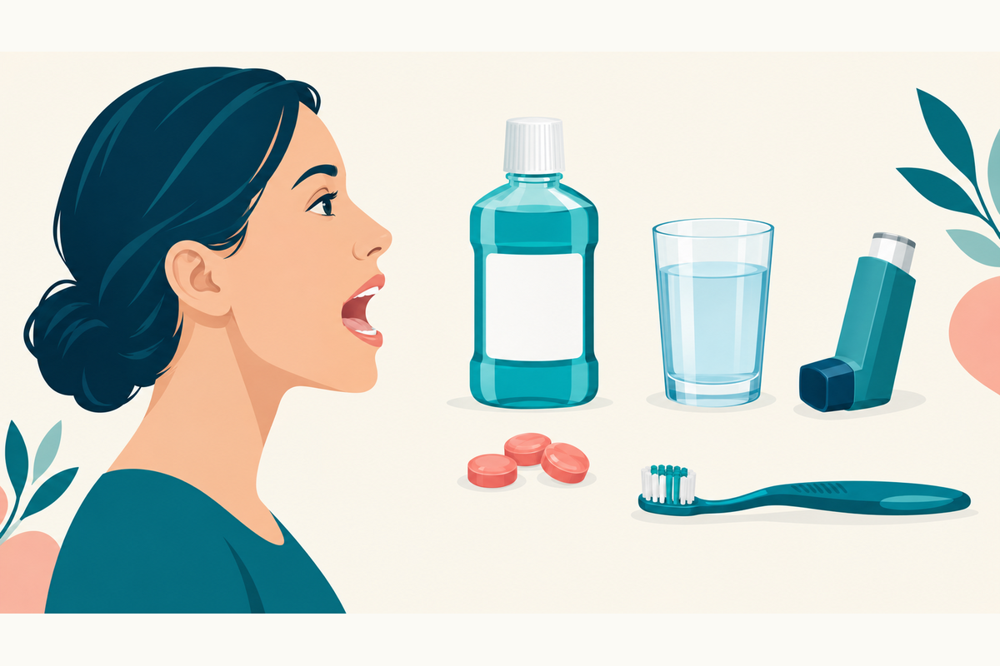

Oral Thrush Treatment in Adults: The 7 to 14 Day Plan
Recognizing thrush, choosing the right antifungal, and preventing another episode. A practical adult guide with clear limits for home and video care.

What is the usual 7 to 14 day treatment plan for oral thrush in adults?
Key Takeaways
- Common IDSA treatment courses last 7 to 14 days; product-label directions may differ.[1][7][8]
- Mild mouth-limited disease often uses a local antifungal; systemic therapy needs safety screening.[1][3][8]
- A white tongue is not enough to diagnose thrush, and persistent fixed patches need examination.[5][14]
- Clotrimazole troches, nystatin suspension, and skin or vaginal products are not interchangeable.[6][7]
- Rinse and spit after a steroid inhaler as directed; do not stop it on your own.[9]
- Clean dentures and address the trigger alongside antifungal treatment.[1][5][10]
- Painful swallowing, recurrent infection, or failure of treatment needs further evaluation.[1][2][5][6]
How do you get rid of oral thrush?
What is the first treatment for an adult with oral thrush?
First, confirm that the mouth changes are consistent with thrush and check why it developed. For mild infection limited to the mouth, a clinician commonly chooses a local antifungal, such as clotrimazole troches or nystatin suspension. More extensive disease may call for a swallowed medicine such as fluconazole. These are not interchangeable products, and treatment selection depends on severity, medicines, and underlying health.[1][3][6][7][8]
The IDSA guideline gives a 7 to 14 day range for common oral-thrush regimens. That is a treatment-course range, not a promise that every white tongue is thrush or that every patient should stop on day 7. The clotrimazole label specifies 14 days, and the cited fluconazole label says at least 2 weeks. Follow the prescription rather than shortening treatment when the mouth looks better.[1][6][7][8]
A typical first episode with an identifiable trigger may be suitable for short-term primary care. Repeated episodes, unusual lesions, swallowing symptoms, or significant immunosuppression need a different evaluation, not automatic repeat prescriptions.[1][4][5][6]
What does oral thrush look and feel like?
Oral thrush, also called oral or oropharyngeal candidiasis, is an overgrowth of Candida yeast in the mouth. It can cause creamy white patches on the tongue, inner cheeks, palate, or other mouth surfaces. In the common white-plaque form, a clinician may find that the coating wipes away and leaves a red, sore surface that can bleed. Do not scrape aggressively to try to diagnose it yourself.[2][5][10]
White-plaque, red-mouth, and denture-associated patterns
Not every case has a thick white coating. Redness, burning, altered taste, discomfort with food, and cracks at the mouth corners can accompany infection. Denture-associated inflammation may be mainly red beneath the denture. Appearance alone is not enough to identify every cause, especially from a photograph.[2][5][10]
A thin tongue coating, a single painful ulcer, or a persistent white patch can have a different explanation. A mouth symptom that is fixed, worsening, hard, or not healing deserves examination rather than repeated antifungal treatment.[5][14][15]
What causes oral thrush in adults?
Candida can be present in the mouth without causing disease. Thrush develops when conditions favor overgrowth, such as recent antibiotics, inhaled or systemic corticosteroids, dentures, dry mouth, diabetes, cancer treatment, or weakened immunity. This is not proof of poor hygiene, and one episode does not establish a particular underlying disease.[1][4][10]
Antibiotics can disturb the normal oral microbial community. Saliva and local immune defenses also help control Candida, which is why dry mouth and changes in immune function matter. A positive Candida culture by itself is not the whole diagnosis; the clinician must interpret it with the examination and symptoms.[1][10]
Oral thrush vs. white tongue, canker sores, and leukoplakia
“White tongue” is a description, not a diagnosis. A clinician considers where the change is, whether there are plaques elsewhere in the mouth, pain, risk factors, and whether a lesion persists. Wipeability is a clue, not a safe stand-alone home test: fixed white lesions and uncommon forms of candidiasis can overlap in appearance.[5][10][14]
Swipe horizontally on a small screen to read every column.
| Pattern | Possible explanation | Next step |
|---|---|---|
| Diffuse coating or white patches | Thrush is one possibility; ordinary coating and other causes also occur | Clinical assessment when painful, persistent, or associated with risk factors |
| A discrete painful sore | A canker sore or other ulcer rather than a sheet of yeast plaques | Evaluate a persistent, unusual, bleeding, or worsening ulcer |
| A fixed white patch that does not wipe away | Leukoplakia or another mucosal disorder must be considered | Dental or medical examination; do not assume an antifungal will resolve it |
NHS advice recommends assessment for a mouth ulcer lasting longer than 3 weeks, and for a white patch that does not go away. Seek care sooner if the lesion is suspicious or symptoms are worsening. See the canker-sore guide for a different type of mouth problem.[14][15]
How is oral thrush diagnosed, and when are tests needed?
Typical cases are often assessed from the history and mouth examination, but uncertain or persistent cases may need a scraping examined with potassium hydroxide (KOH), a culture, or further oral evaluation. A culture can identify Candida without proving that it is responsible for every symptom. Repeated treatment without reconsidering the diagnosis is a poor substitute for examination.[6][7][10]
A label-specific detail matters: the cited US clotrimazole troche label says to confirm the diagnosis by KOH smear and/or culture before treatment. That is stricter than a blanket “a photo is always enough” approach. If confirmation testing is needed, the patient should be directed to an appropriate in-person setting rather than promised a prescription through video alone.[7]
Recurrent or unexplained infection may prompt a review of blood sugar, medicines, dry mouth, immune health, and dental factors. HIV testing or other tests should be based on the clinical situation, not on a claim that all thrush means HIV. Advanced immunosuppression is outside routine uncomplicated same-day treatment.[1][4][10]
Nystatin, clotrimazole troches, or fluconazole: which treatment?
Local medicines keep the antifungal in contact with mouth tissue; swallowed fluconazole is absorbed and acts throughout the body. Systemic treatment is not automatically “better” for a mild local infection. The ability to use a medicine correctly, severity, interactions, and examination findings all matter.[1][6][7][8]
Swipe horizontally on a small screen to read every column.
| Medicine | Guideline or label regimen | Practical distinction |
|---|---|---|
| Nystatin suspension, 100,000 units/mL | IDSA: 4–6 mL four times daily for 7–14 days | Local alternative for mild disease; label also specifies continuing at least 48 hours after symptoms resolve |
| Clotrimazole troche, 10 mg | IDSA: five times daily for 7–14 days; US label: 14 consecutive days | Dissolve slowly in the mouth; label calls for diagnostic confirmation |
| Fluconazole tablets | IDSA: 100–200 mg daily for 7–14 days in moderate-to-severe disease | US label: 200 mg on day 1, then 100 mg daily for at least 2 weeks; interactions and organ function affect use |
These are reference regimens, not instructions to start or combine medicines on your own. They do not cover pregnancy, children, esophageal infection, or refractory disease. A clinician must resolve the guideline/label differences for the individual prescription.[1][6][7][8]
Nystatin suspension: contact with the mouth matters
Shake and measure the prescribed suspension as directed by the dispensed product. The cited label divides the dose between both sides of the mouth and advises keeping it in the mouth as long as possible before swallowing. Swallowing immediately reduces the intended local contact. Use an oral measuring device rather than a kitchen spoon, and complete the prescribed course.[6]
Clotrimazole troches: a lozenge, not a skin cream
A troche must dissolve slowly in the mouth. It is not meant to be swallowed whole, and clotrimazole skin cream or a vaginal product is not a substitute. The label reports nausea, unpleasant mouth sensations, and liver-test abnormalities; “local treatment” does not mean that medical history is irrelevant.[7]
Fluconazole: not the single-dose vaginal-yeast regimen
The single 150 mg dose used for many vaginal yeast infections is not the cited label regimen for oral thrush. Oral candidiasis uses a different course. Do not repurpose a leftover tablet or copy a vaginal-yeast treatment plan for mouth symptoms.[8]
Which medicine interactions and safety issues matter?
Before fluconazole, provide a complete medicine and supplement list. Important examples include warfarin, some statins, sulfonylurea diabetes medicines, tacrolimus, and medicines that prolong the QT interval. These interactions can require a different antifungal, monitoring, or a prescriber-directed adjustment. Do not stop another prescribed medicine yourself.[8]
Swipe horizontally on a small screen to read every column.
| Situation | Why it matters | Patient action |
|---|---|---|
| Warfarin or other complex anticoagulant therapy | Fluconazole can increase anticoagulant effect; warfarin monitoring may change | Tell the prescriber and anticoagulation team |
| Certain statins, sulfonylureas, or tacrolimus | Raised drug exposure may cause muscle injury, low glucose, or toxicity | Have the exact drug and dose checked |
| Kidney disease, liver disease, or rhythm problems | Dose adjustment or a different approach may be needed | Do not use someone else’s regimen |
| Pregnancy or possible pregnancy | Fluconazole carries fetal-risk warnings | Arrange individual assessment; this guide is not a pregnancy regimen |
The list is not exhaustive. New rash, swelling, breathing trouble, fainting, or symptoms of significant liver injury while taking a medicine warrant prompt medical advice or emergency care depending on severity. Nystatin can also cause irritation or allergic reactions despite minimal systemic absorption.[6][8]
How long does oral thrush last?
Symptoms may begin improving within several days of effective treatment, but clearing symptoms and completing treatment are different milestones. IDSA's common course range is 7–14 days; clotrimazole labeling specifies 14 days, and fluconazole labeling at least 2 weeks. Do not treat a duration range as permission to stop early.[1][6][7][8]
If symptoms worsen, contact the treating clinician sooner. If there is no meaningful improvement after about a week, or symptoms remain after the course, arrange reassessment rather than automatically extending it. The NHS uses lack of improvement after 1 week of mouth-gel treatment as a review threshold; the US nystatin label calls for confirming the diagnosis again when response is lacking.[5][6]
Can oral thrush go away on its own? What about home remedies?
Do not rely on spontaneous resolution of persistent, painful, or recurrent adult mouth symptoms. Antifungal treatment and correction of a contributing factor are the established approach to confirmed thrush. Gentle brushing, adequate fluid intake, and foods you can comfortably tolerate can support mouth care, but they do not replace diagnosis or an indicated antifungal.[1][3][5]
Probiotics and yogurt: promising is not proven replacement treatment
A 2026 umbrella review found signals of benefit from probiotics, but adult evidence was rated low certainty. The included reviews varied substantially, and overlapping primary studies limited confidence. A probiotic product or yogurt should not be presented as a reliable stand-alone cure for established thrush.[12]
Avoid improvised antifungal products
Do not put skin creams, vaginal treatments, or harsh concentrated preparations into your mouth. Use medicines formulated for the oral route. Restrictive “Candida cleanse” diets are not a substitute for the antifungal treatments recommended in the cited guideline, and avoiding broad food groups can distract from the actual trigger.[1][6][7][8]
Is oral thrush treatment available over the counter?
In the United States, the nystatin suspension, clotrimazole troches, and fluconazole tablets cited here are prescription products. Buying an antifungal meant for the skin or vagina does not provide an equivalent oral treatment. A pharmacist can help identify the correct dosage form and explain a prescription.[6][7][8]
Availability differs internationally. NHS advice discusses pharmacy mouth gels in the UK; that should not be read as proof that the same preparation or access rules apply in the US. This guide uses US prescribing and labeling as its default.[5][6][7][8]
Is oral thrush contagious?
Adult oral thrush is generally an overgrowth of yeast already present rather than an illness managed like influenza or a cold. NHS guidance states that adult oral thrush is not contagious. That statement should not be expanded into a claim that Candida can never be transferred or that every white oral lesion is harmless.[5][10]
The practical focus is treating the confirmed infection and addressing the trigger, not isolating everyone with mouth symptoms. A different diagnosis, such as a cold sore, changes the advice. If lesions are atypical or there has been a relevant exposure, get them assessed rather than assuming thrush.[5][14][15]
How do you prevent oral thrush after an inhaler or with dentures?
Inhaled corticosteroids: rinse and spit; keep asthma care coordinated
After a steroid inhaler, follow its instructions to rinse the mouth with water and spit it out rather than swallow it. Symbicort's label explicitly gives this direction. Do not stop a controller inhaler on your own because thrush develops; its prescriber can review technique and decide whether any treatment change is needed.[9]
Ask a clinician or pharmacist to check the exact inhaler and technique. Whether a spacer is appropriate depends on the device; do not assume all inhalers can be attached to one. Repeated thrush is a reason for a technique and treatment review, not automatic abandonment of breathing treatment.[4][9]
Dentures: treat the mouth and the contributing surface
Clean dentures as directed, remove them at night, and have a dentist assess poor fit. IDSA recommends denture disinfection alongside antifungal treatment for denture-related candidiasis. Follow dental and manufacturer instructions for the material rather than inventing a bleach or antifungal soaking recipe.[1][5][10]
Regular oral care and attention to dry mouth, smoking, blood sugar, and unnecessary antibiotic use can help address contributing factors. Do not stop prescribed antibiotics or other medicines without discussing the plan.[4][5][10]
What does current evidence add to standard treatment?
The 2016 IDSA guideline remains the named foundation for this guide; its publication date should not be mistaken for a new 2026 update. Much of the trial evidence comes from people with HIV or other risk factors. For example, the SMiLES trial randomized 578 patients with HIV to miconazole buccal tablets or clotrimazole troches and found miconazole noninferior. Those results do not supply a personalized cure probability for a healthy adult.[1][11]
A 2026 pilot trial of chairside photodynamic therapy randomized only 18 participants. Its open-label exploratory design, small groups, and short follow-up do not establish equivalence to nystatin. It does not justify home light devices, unsupervised methylene-blue use, or replacing standard medicine in same-day care.[13]
The newer probiotic synthesis is also low-certainty evidence rather than a reason to discard standard antifungals. When thrush returns or fails treatment, the better next step is to reconsider the diagnosis and contributing conditions, not rotate through unproven remedies or repeated azoles without review.[1][6][12]
When do swallowing symptoms or recurrent thrush need further care?
Pain or difficulty swallowing changes the pathway. Esophageal candidiasis can occur with or without obvious mouth thrush and requires systemic treatment and clinical evaluation. It is not simply a reason to keep using an oral rinse. Seek urgent in-person care if you cannot swallow liquids, cannot maintain hydration, or are significantly unwell; breathing difficulty or inability to handle saliva needs emergency help.[1][2][5]
Arrange appropriate in-person or specialist assessment for repeated or persistent disease, significant immunosuppression, a fixed or suspicious lesion, or failure of a correctly used course. A dentist may be the best first stop for a persistent local lesion or denture problem. Culture, susceptibility testing, or biopsy may be needed depending on the findings.[1][6][7][14][15]
For a stable adult with a typical first episode and no warning signs, either an in-person clinician or a suitable video visit can begin the assessment. TeleDirectMD directly lists adult oral-thrush care, but its scope excludes esophageal disease, severe immunosuppression needing specialist care, suspected malignancy, and refractory infection. Any necessary examination or confirmation test still requires an appropriate local service.
Before the visit, note the symptom start date, take clear well-lit photographs if asked, and have your medicines, inhaler name, recent antibiotic history, denture use, and prior treatment details ready. This helps choose the right next step without treating every white tongue as the same condition.
Frequently Asked Questions
No. Troches are oral lozenges that dissolve slowly in the mouth. Skin or vaginal products must not be substituted for a medicine formulated for oral use.[7]
Use the prescribed concentration and measuring device. The cited label divides the dose between both sides of the mouth and says to retain it as long as possible before swallowing. Complete the prescribed course.[6]
Do not copy the single-dose vaginal-yeast regimen for oral thrush. The oral-thrush label specifies a different dose schedule and duration, and interactions and health conditions need review.[8]
They should not replace prescribed treatment. A 2026 umbrella review found low-certainty adult evidence with important variation and overlap among studies, not a dependable stand-alone cure.[12]
Do not stop it on your own. Rinse and spit after use as the product directs, and ask the prescriber to review technique and treatment if thrush occurs.[9]
References
- Pappas PG, Kauffman CA, Andes DR, et al. Clinical Practice Guideline for the Management of Candidiasis: 2016 Update by the Infectious Diseases Society of America. Clinical infectious diseases : an official publication of the Infectious Diseases Society of America. 2016;62(4):e1-50. https://pubmed.ncbi.nlm.nih.gov/26679628/
- CDC. Candidiasis Basics. Accessed October 5, 2026. https://www.cdc.gov/candidiasis/about/index.html
- CDC. Treatment of Candidiasis. September 12, 2025. https://www.cdc.gov/candidiasis/treatment/index.html
- CDC. Risk Factors for Candidiasis. Accessed October 5, 2026. https://www.cdc.gov/candidiasis/risk-factors/index.html
- NHS. Oral thrush (mouth thrush). UK patient guidance; pharmacy access differs from the US. Accessed October 5, 2026. https://www.nhs.uk/conditions/oral-thrush-mouth-thrush/
- DailyMed. Nystatin oral suspension 100,000 units/mL. Prescribing information. Accessed October 5, 2026. https://dailymed.nlm.nih.gov/dailymed/drugInfo.cfm?setid=9954118e-abe6-4388-98c9-4473d39b2e28
- DailyMed. Clotrimazole troche 10 mg. Prescribing information. Accessed October 5, 2026. https://dailymed.nlm.nih.gov/dailymed/drugInfo.cfm?setid=0bc4b876-ddee-4f03-b44f-544348739a26
- DailyMed. Fluconazole tablets. Prescribing information. February 10, 2026. https://dailymed.nlm.nih.gov/dailymed/drugInfo.cfm?setid=c2c7242d-d172-4733-e053-2995a90acb2e
- DailyMed. Symbicort (budesonide/formoterol). Prescribing information and patient instructions. Accessed October 5, 2026. https://dailymed.nlm.nih.gov/dailymed/drugInfo.cfm?setid=fafa4cf1-99c2-43d5-73ad-51f256de3be0
- Salvatori O, Puri S, Tati S, et al. Innate Immunity and Saliva in Candida albicans-mediated Oral Diseases. Journal of dental research. 2016;95(4):365-71. https://pubmed.ncbi.nlm.nih.gov/26747422/
- Vazquez JA, Patton LL, Epstein JB, et al. Randomized, comparative, double-blind, double-dummy, multicenter trial of miconazole buccal tablet and clotrimazole troches for the treatment of oropharyngeal candidiasis: study of miconazole Lauriad® efficacy and safety (SMiLES). HIV clinical trials. 2010;11(4):186-96. https://pubmed.ncbi.nlm.nih.gov/20974574/
- Mehta V, Galletti C, Mathur A, et al. Efficacy of probiotics in the management of oral candidiasis: an umbrella review of systematic reviews and meta-analyses. Systematic reviews. 2026;15(1):. https://pubmed.ncbi.nlm.nih.gov/42343426/
- Zhou P, Yang F, Fang J, et al. Clinical feasibility of chairside methylene blue-mediated photodynamic therapy for oral candidiasis. BMC oral health. 2026;26(1):. https://pubmed.ncbi.nlm.nih.gov/42204522/
- NHS. Leukoplakia. Accessed October 5, 2026. https://www.nhs.uk/conditions/leukoplakia/
- NHS. Mouth ulcers. Accessed October 5, 2026. https://www.nhs.uk/conditions/mouth-ulcers/
Sources checked October 5, 2026. Older guidelines and trials are identified by publication date. The saliva review was also read through EBSCOhost.
This health guides library is published for educational purposes only. It does not constitute medical advice and is not a substitute for evaluation by a licensed clinician. Always consult a qualified healthcare provider about any medical concern. All articles are reviewed by Parth Bhavsar, MD, and cite peer-reviewed sources where possible.